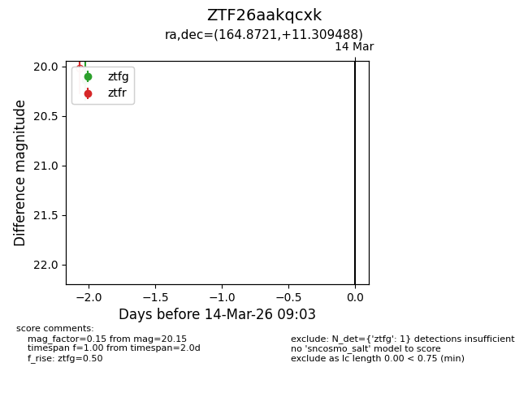
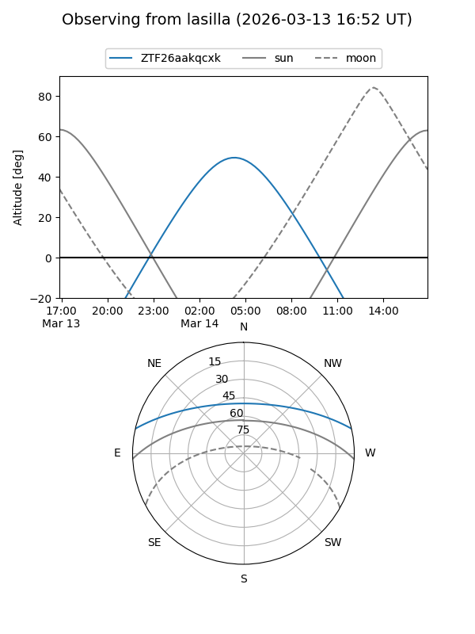
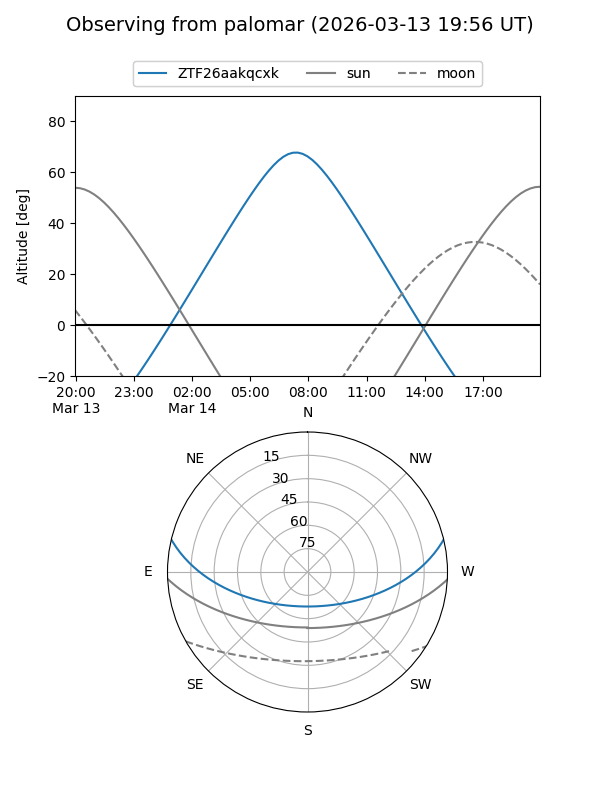

ZTF26aakqcxk
Target ZTF26aakqcxk at 2026-03-14 09:05
Aliases and brokers:
FINK: link
Lasair: link
ALeRCE: link
alt names
ZTF26aakqcxk (ztf,fink_ztf)
Coordinates:
equatorial (ra, dec) = 164.8721,+11.30949
equatorial (HMS+DMS) = 10:59:29.30,+11:18:34.16
galactic (l, b) = (238.5147,+59.32406)
Flags:
Photometry:
last ztfg=20.15
1 ztfg detections
Lightcurve

Visibility


Additional plots